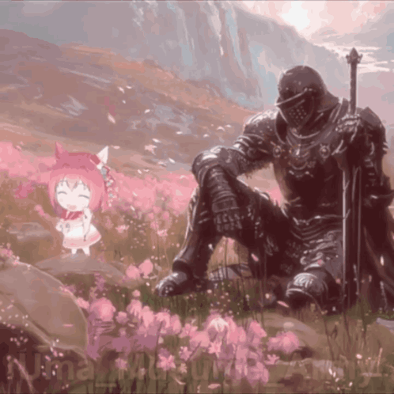

Invocar um Pet
Clique no botão para invocar um pet das trevas (API dog.ceo)
Mesmo na perigosa cidade de Anor Londo a sua invocação merece o melhor tratamento.
Cuidamos do seu pet com dedicação, mesmo nas terras mais sombrias. Seu melhor amigo merece o melhor!
Clique no botão para invocar um pet das trevas (API dog.ceo)
